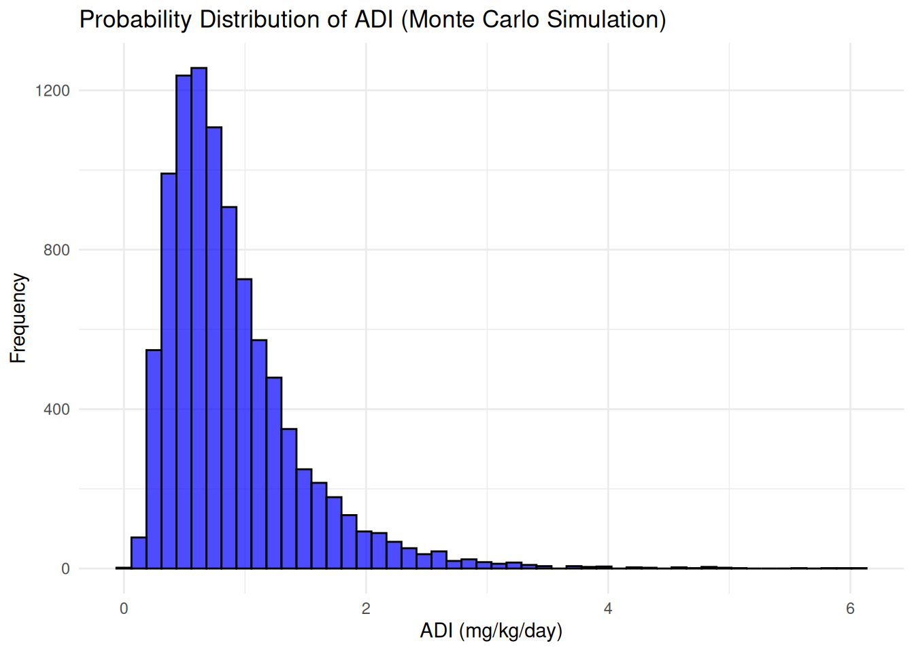
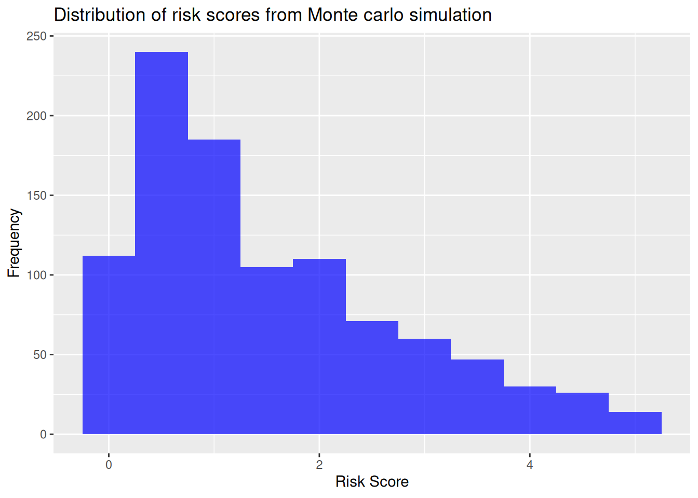

Chapter 6 CONVENTIONAL AND PROBABILISTIC RISK ASSESSMENT
6.1 Introduction
Exposure to chemical is currently inevitable to the current society. Scientists and environmentalists aim not for zero exposure but minimize the release of the chemical contaminants to the environment and limit their potential adverse health or ecological effects.
Maximum Contaminant Levels(MCLs) - is the concentration of a chemical contaminant that the environmental protection authorities believe would not cause substantial adverse health effects to the public.
Assumptions based on exposure characteristics are made before deciding on a effective MCL. The input factors are then combined with the estimated toxicity or potency of the chemical, to back-calculate an allowable concentration or MCL for the chemical, which is believed would not cause substantial adverse health effects. These are some of the assumptions;
- The daily rate of water consumption.
- An individual body weight.
- Duration of residency at one location
- Expected human lifespan.
These assumptions are the basic of back-calculations that is used to establish the allowable contaminant concentrations.
Also, forward risk assessment can be performed to quantify the actual health risks posed by exposure to environmental contaminants.
There are two methods used to estimate the potential risk of a contaminant concentration;
- Conventional or point risk estimation.
- Probabilistic risk assessment.
6.2 Conventional or Point Risk Estimation
Point risk estimation uses a single variable to calculate the potential risk of a chemical contaminant for instance an adult individual body weight of 80 kilos, 1 to 2 liters of water as the daily ingestion rate for an individual, human lifespan of 70 years etc.
Based on the above variable values the potential risk of cancer from a contaminant may be 10 in a million.
The exposure of contaminants to humans have main three pathways;
- ingestion : consumption of medium containing the contaminant such as water or soil.
- dermal contact : absorption of the contaminant through skin contact.
- inhalation : breathing air containing the contaminant.
The exposure might be either; carcinogenic(causing cancer), noncarncinogenic (causing other illness that is not cancer such skin rashes, suffocation, irritation) or both.
Here, the potential health risk is estimated by first computing an average daily intake of the contaminant, and then integrating it with the contaminant health factor to quantify the risk.
According to USEPA, 1989, the basic equation for computing daily intake or dose the ingestion or oral pathway is as follows; \[I = {{C * IR * EF * ED}\over{BW * AT}}\]
Where;
- \(I\): the chronic average daily intake in milligrams per kilogram of bodyweight of the contaminant per day.
- \(C\): the chemical concentration(eg. mg/kg for soil or mg/l for water)
- \(IR\): the ingestion rate(e.g 50mg/day for soil or 2liters/day for water).
- \(EF\): the exposure frequency(days per year that the exposure occurs)
- \(ED\): the exposure duration in years.
- \(BW\): body weight in kilograms.
- \(AT\): averaging time in days(which is equal to ED365 for noncarcinogens and 70365 for carcinogens, where 70 years is the assumed average human lifespan and there are 365 days in the year)
Also, according to USEPA, 2004, this is the basic dermally absorbed intake or dose through the soil dermal contact pathway; \[I = {{Cs * 10^{-6}SA*AF*EV*ABS*EF*ED}\over{BW*AT}}\]
and this is the equation to calculate the daily absorbed intake or dose through water dermal contact pathway; \[I = {{Cw * 10^{-3}SA*PC*ET*EF*ED}\over{BW*AT}}\]
Where:
- \(Cs\) : is the soil concentration of the contaminant, that is, EPC, usually reported in mg/kg but the conversion factor of \(10^{-6}\) is applied to convert the units to kg/kg.
- \(Cw\) : is the water concentration of the contaminant, that is, EPC, usually reported in mg/l but the conversion factor of \(10^{-3}\) is applied to convert the units to mg/cm3 to maintain consistency of units.
- \(SA\): the exposed skin surface area (cm2).
- \(AF\): s the soil-to-skin adherence factor in milligrams per square centimeters per soil contact event (i.e.,mg/cm2 event)
- \(EV\): is the number of contact events per day, usually assumed as one event per day (i.e., 1/day).
- \(PC\): the dermal permeability constant (cm/h), which estimates the rate of transport of the contaminant across the skin into the body.
- \(ABS\): the dermal absorption fraction for the contaminant (unitless)
Try it!
We will access the potential health risks associated with consuming water from various sources, utilizing both Conventional (Point) Risk Estimation. The dataset we’ll use is the Water Quality and Potability dataset from Kaggle, which contains water quality measurements and assessments related to potability. The data can be downloaded from here. We will;
- Calculate the Average Daily Intake (ADI) of a specific contaminant (e.g., Trihalomethanes) using standard exposure assumptions.
- Estimate the potential health risk based on the computed ADI.
Before we solve the above, it assumed that;
Body Weight(BW):70kg
Water Ingestion Rate (IR): 2 liters/day
Exposure Frequency (EF): 350 days/year
Exposure Duration (ED): 30 years
Averaging Time(AT):
- For non-carcinogens: \(AT = ED \times 365\)
- For carcinogens: \(AT = 70 \times 365\)
and the formula for Average Daily Intake(ADI): \[{ADI} = {{C \times IR \times EF \times ED}\over{BW \times AT}}\]
# Load the data
df <-read.csv("data/water_potability.csv")
# Focus on the Trihalomethanes column
trihalo_data <- df$Trihalomethanes
# Define constants
BW <- 70 # kg
IR <- 2 # liters/day
EF <- 350 # days/year
ED <- 30 # years
AT_noncarcinogen <- ED * 365 # days
AT_carcinogen <- 70 * 365 # days
# Compute average concentration of Trihalomethanes
C_avg <- mean(trihalo_data, na.rm = TRUE) # mg/L
# Compute ADI
ADI_noncarcinogen <- (C_avg * IR * EF * ED) / (BW * AT_noncarcinogen)
ADI_carcinogen <- (C_avg * IR * EF * ED) / (BW * AT_carcinogen)
# Display results
cat(sprintf("Average Daily Intake (ADI) for Non-Carcinogens: %.6f mg/kg/day\n", ADI_noncarcinogen))## Average Daily Intake (ADI) for Non-Carcinogens: 1.819077 mg/kg/day## Average Daily Intake (ADI) for Carcinogens: 0.779604 mg/kg/dayPractical Exercise
One of the examples is the inhalation risk assessment (example 21.1)
Solution
________________________________________________________________________________
6.3 Probabilistic Risk Assessment Using Monte Carlo Simulation
While the method discussed above, point risk estimation, produces a single estimate of the health risk, probabilistic risk assessment produces probabilities or likelihoods of specified risks. This is due to variability and uncertanities regarding contaminant concentrations and other assumptions like daily water consumption, individual bodyweight, genetics and exposure to the contaminant.
This leads to result in overestimation or underestimation of the actual exposure risk for some members.
Probability risk assessment produces a full probability distribution of the risks indicating the probability or likelihood for each specified risk by using exposure characteristics and contaminant concentrations.
Similarly, probability distributions are specified for other exposure characteristics such as water or soil ingestion rates, inhalation or breathing rates, and skin surface area, if the distributions are known. Monte Carlo simulation is then used to produce hundreds or thousands of various combinations of values from each of the probability distributions specified for the exposure characteristics and contaminant concentrations, and a point risk computed for each combination of inputs, thereby generating a probability distribution of risks
Try it!
Using the water potability data set(used in the previous example), we will;
- Define probability distributions for exposure parameters (e.g., normal distribution for body weight, log-normal for ingestion rate).
- Use Monte Carlo simulation to generate a large number of possible exposure scenarios.
- Calculate the ADI for each scenario and develop a risk distribution.
- Interpret the probability distribution of risks to assess the likelihood of adverse health effects.
By defining the probability distributions(SD= standard deviation);
- Body weight(BW): Normal distribution, mean = 70kg, SD = 10kg
- Water Ingestion Rate (IR): Log-normal distribution, mean = 2litres/day, SD=0.5litres
- Trihalomethanes Concentration (C): Will find from the data values,
trihalo_data.
# Load necessary library
library(MASS)
library(ggplot2)
# Number of simulations
num_simulations <- 10000
# Generate random values from distributions
set.seed(123) # for reproducibility
BW_sim <- rnorm(num_simulations, mean = 70, sd = 10)
IR_sim <- rlnorm(num_simulations, meanlog = log(2), sdlog = 0.5)
C_sim <- sample(trihalo_data, num_simulations, replace = TRUE)
# Compute ADI for each simulation
ADI_sim <- (C_sim * IR_sim * EF * ED) / (BW_sim * AT_carcinogen)
# Convert to data frame for visualization
ADI_df <- data.frame(ADI_sim)
# Plot probability distribution of ADI values
ggplot(ADI_df, aes(x = ADI_sim)) +
geom_histogram(bins = 50, color = "black", fill = "blue", alpha = 0.7) +
labs(title = "Probability Distribution of ADI (Monte Carlo Simulation)",
x = "ADI (mg/kg/day)", y = "Frequency") +
theme_minimal()## Warning: Removed 455 rows containing non-finite outside
## the scale range (`stat_bin()`).
Finally, lets compute the risk probabilities. We will determine the percentage of cases where ADI(calculated in the previous example exercise) exceeds the reference dose(RfD) – will find from USEPA.
# Assume reference dose (RfD) from U.S. EPA for Trihalomethanes
RfD <- 0.01 # mg/kg/day (example value)
# Compute probability of exceeding RfD
prob_exceedance <- mean(ADI_sim > RfD, na.rm=TRUE) * 100
# Display result
cat(sprintf("Probability of Exceeding Safe Limit (RfD): %.2f%%\n", prob_exceedance))## Probability of Exceeding Safe Limit (RfD): 99.99%There is a high risk of carcinogenic substances in the water which should be taken care of.
6.4 Practical Exercise
Solution
One of the examples is the inhalation risk assessment (example 21.2). Will search examples from online
________________________________________________________________________________
6.5 Hands-On Exercise
In this exercise, we will utilize the Ecological Risk Assessment Framework(ERAF) data set from Kaggle. It provides data on various human activities and their potential impacts on sensitive ecosystems. The data set can be downloaded from here
You are required to;
Calculate the risk scores for specific activity-stressor-ecosystem combinations using deterministic methods.
- Use a predefined impact ratings and exposure factors to calculate the risk score.
Incorporate variability and uncertainty into the risk assessment using Monte Carlo simulation.
Solution
The solution will be revisited!
# Load the required libraries
library(dplyr)
library(ggplot2)
# Load the dataset
data <- read.csv("data/ERAF_dataset.csv")
# Filter for specific activity-stressor-ecosystem combination -- In our case we pick natural waters
select_data <- data %>%
filter(Activity == "Fishing", Stressor == "Aquatic Invasive Species")
## Conventional risk assessment
### Assume pre-defined impact rating and exposure factor
impact_rating <- 3 # Scake of 1 to 5
exposure_factor <- 0.7 # Scale of 0 to 1
### Calculate deterministic risk score
risk_score <- impact_rating * exposure_factor
print(paste("Deterministic Risk Score:", risk_score))## [1] "Deterministic Risk Score: 2.1"## Probabilistic Risk assessment
### Define distribution for impact rating
set.seed(123)
impact_ratings <- sample(1:5, 1000, replace=TRUE)
exposure_factors <- runif(1000, 0, 1)
### Perform Monte Carlo simulations
risk_scores <- impact_ratings * exposure_factors
### Distribution of risk scores
ggplot(data.frame(RiskScore = risk_scores), aes(x = RiskScore)) +
geom_histogram(binwidth=0.5, fill="blue", alpha=0.7) +
labs(
title = "Distribution of risk scores from Monte carlo simulation",
x = "Risk Score",
y = "Frequency"
)
## Min. 1st Qu. Median Mean 3rd Qu. Max.
## 0.005396 0.535681 1.129621 1.510657 2.241480 4.981860________________________________________________________________________________